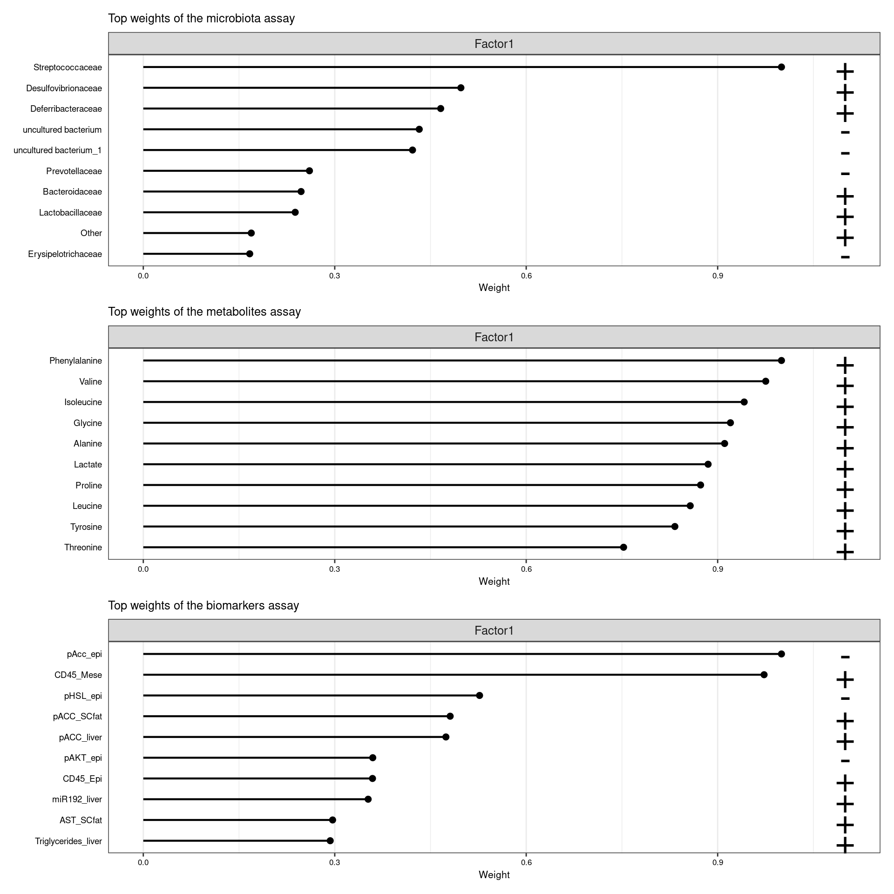

library(mia)12 Multi-Assay Analyses
Multi-omics approaches integrate data from multiple sources. For example, we can integrate taxonomic abundance profiles with metabolomic or other biomolecular profiling data to observe associations, make predictions, or aim at causal inferences. Integrating evidence across multiple sources can lead to enhanced predictions, more holistic understanding, or facilitate the discovery of novel biomarkers. In this section we demonstrate common multi-assay data integration tasks.
Cross-correlation analysis is a straightforward approach that can reveal strength and type of assocations between data sets. For instance, we can analyze if higher presence of a specific taxon relates to higher levels of a biomolecule.
The analyses can be facilitated by the multi-assay data containers, TreeSummarizedExperiment and MultiAssayExperiment. These are scalable and contain different types of data in a single container, making this framework particularly suited for multi-assay microbiome data incorporating different types of complementary data sources in a single reproducible workflow. Solutions to a number of data integration problems are discussed in more detail in Section @ref(containers). Another experiment can be stored in altExp slot of SE data container. Alternatively, both experiments can be stored side-by-side in a MAE data container (see sections @ref(alt-exp) and @ref(mae) to learn more about altExp and MAE objects, respectively). Different experiments are first imported as single-assay data containers similarly to the case when only one experiment is present. After that, the different experiments can be combined into one multi-assay data container. The result is a MAE object with multiple experiments in its experiment slot, or a TreeSE object with alternative experiments in the altExp slot.
As an example, we use a dataset from the following publication: [-@Hintikka2021] Xylo-oligosaccharides in prevention of hepatic steatosis and adipose tissue inflammation: associating taxonomic and metabolomic patterns in fecal microbiota with biclustering. In this study, mice were fed either with a high-fat or a low-fat diet, and with or without prebiotics, for the purpose studying whether prebiotics attenuate the negative impact of a high-fat diet on health.
This example data can be loaded from microbiomeDataSets. The data is already in MAE format. It includes three different experiments: microbial abundance data, metabolite concentrations, and data about different biomarkers. If you like to construct the same data object from the original files instead, here you can find help for importing data into an SE object.
# Load the data
data(HintikkaXOData, package = "mia")
mae <- HintikkaXODatalibrary(stringr)
# Drop off those bacteria that do not include information in Phylum or lower levels
mae[[1]] <- mae[[1]][!is.na(rowData(mae[[1]])$Phylum), ]
# Clean taxonomy data, so that names do not include additional characters
rowData(mae[[1]]) <- DataFrame(apply(rowData(mae[[1]]), 2,
str_remove, pattern = "._[0-9]__"))# Available alternative experiments
experiments(mae)ExperimentList class object of length 3:
[1] microbiota: TreeSummarizedExperiment with 12613 rows and 40 columns
[2] metabolites: TreeSummarizedExperiment with 38 rows and 40 columns
[3] biomarkers: TreeSummarizedExperiment with 39 rows and 40 columns# Microbiome data
getWithColData(mae, "microbiota")class: TreeSummarizedExperiment
dim: 12613 40
metadata(0):
assays(1): counts
rownames(12613): GAYR01026362.62.2014 CVJT01000011.50.2173 ...
JRJTB:03787:02429 JRJTB:03787:02478
rowData names(7): Phylum Class ... Species OTU
colnames(40): C1 C2 ... C39 C40
colData names(6): Sample Rat ... Fat XOS
reducedDimNames(0):
mainExpName: NULL
altExpNames(0):
rowLinks: NULL
rowTree: NULL
colLinks: NULL
colTree: NULL# Metabolite data
getWithColData(mae, "metabolites")class: TreeSummarizedExperiment
dim: 38 40
metadata(0):
assays(1): nmr
rownames(38): Butyrate Acetate ... Malonate 1,3-dihydroxyacetone
rowData names(0):
colnames(40): C1 C2 ... C39 C40
colData names(6): Sample Rat ... Fat XOS
reducedDimNames(0):
mainExpName: NULL
altExpNames(0):
rowLinks: NULL
rowTree: NULL
colLinks: NULL
colTree: NULL# Biomarker data
getWithColData(mae, "biomarkers")class: TreeSummarizedExperiment
dim: 39 40
metadata(0):
assays(1): signals
rownames(39): Triglycerides_liver CLSs_epi ... NPY_serum Glycogen_liver
rowData names(0):
colnames(40): C1 C2 ... C39 C40
colData names(6): Sample Rat ... Fat XOS
reducedDimNames(0):
mainExpName: NULL
altExpNames(0):
rowLinks: NULL
rowTree: NULL
colLinks: NULL
colTree: NULL12.1 Cross-correlation Analysis
Next we can perform a cross-correlation analysis. Let us analyze if individual bacteria genera are correlated with concentrations of individual metabolites. This helps to answer the following question: “If bacterium X is present, is the concentration of metabolite Y lower or higher”?
# Agglomerate microbiome data at family level
mae[[1]] <- mergeFeaturesByPrevalence(mae[[1]], rank = "Family")
# Does log10 transform for microbiome data
mae[[1]] <- transformAssay(mae[[1]], method = "log10", pseudocount = TRUE)
# Give unique names so that we do not have problems when we are creating a plot
rownames(mae[[1]]) <- getTaxonomyLabels(mae[[1]])
# Cross correlates data sets
correlations <- testExperimentCrossCorrelation(mae,
experiment1 = 1,
experiment2 = 2,
assay.type1 = "log10",
assay.type2 = "nmr",
method = "spearman",
p_adj_threshold = NULL,
cor_threshold = NULL,
# Remove when mia is fixed
mode = "matrix",
sort = TRUE,
show_warnings = FALSE)Next, we create a heatmap depicting all cross-correlations between bacterial genera and metabolite concentrations.
library(ComplexHeatmap)
# Create a heatmap and store it
plot <- Heatmap(correlations$cor,
# Print values to cells
cell_fun = function(j, i, x, y, width, height, fill) {
# If the p-value is under threshold
if( !is.na(correlations$p_adj[i, j]) & correlations$p_adj[i, j] < 0.05 ){
# Print "X"
grid.text(sprintf("%s", "X"), x, y, gp = gpar(fontsize = 10, col = "#1dff00"))
}
},
heatmap_legend_param = list(title = "", legend_height = unit(5, "cm"))
)
plot12.2 Multi-Omics Factor Analysis
Multi-Omics Factor Analysis (MOFA) is an unsupervised method for integrating multi-omic data sets in a downstream analysis [@Argelaguet2018]. It could be seen as a generalization of principal component analysis. Yet, with the ability to infer a latent (low-dimensional) representation, shared among the multiple (-omics) data sets in hand.
We use the R MOFA2 package for the analysis, and install the corresponding dependencies.
library(MOFA2)
# For inter-operability between Python and R, and setting Python dependencies,
# reticulate package is needed
library(reticulate)
# Let us assume that these have been installed already.
#reticulate::install_miniconda(force = TRUE)
#reticulate::use_miniconda(condaenv = "env1", required = FALSE)
#reticulate::py_install(packages = c("mofapy2"), pip = TRUE, python_version=3.6)The mae object could be used straight to create the MOFA model. Yet, we transform our assays since the model assumes normality per default. We can also use Poisson or Bernoulli distributions among others.
Note that duplicates, such as “uncultured”, might appear when aggregating the microbiome data by a taxonomic rank. To check for duplicates, run any(duplicated(rownames(mae[[1]]))). If it returns TRUE, then the duplicates are present. We can add rownames(mae[[1]]) <- getTaxonomyLabels(mae[[1]], make_unique=TRUE) to remove them.
library(MOFA2)
# For simplicity, classify all high-fat diets as high-fat, and all the low-fat
# diets as low-fat diets
colData(mae)$Diet <- ifelse(colData(mae)$Diet == "High-fat" |
colData(mae)$Diet == "High-fat + XOS",
"High-fat", "Low-fat")
# Transforming microbiome data with rclr
mae[[1]] <- transformAssay(mae[[1]], method = "relabundance")
mae[[1]] <- transformAssay(mae[[1]], assay.type = "relabundance", method = "rclr")
# Transforming metabolomic data with log10
mae[[2]] <- transformAssay(mae[[2]], assay.type = "nmr",
MARGIN = "samples",
method = "log10")
# Transforming biomarker data with z-transform
mae[[3]] <- transformAssay(mae[[3]], assay.type = "signals",
MARGIN = "features",
method = "z", pseudocount = 1)
# Removing assays no longer needed
assay(mae[[1]], "counts") <- NULL
assay(mae[[1]], "log10") <- NULL
assay(mae[[2]], "nmr") <- NULL
assay(mae[[3]], "signals") <- NULL
# Building our mofa model
model <- create_mofa_from_MultiAssayExperiment(mae,
groups = "Diet",
extract_metadata = TRUE)
modelUntrained MOFA model with the following characteristics:
Number of views: 3
Views names: microbiota metabolites biomarkers
Number of features (per view): 38 38 39
Number of groups: 2
Groups names: High-fat Low-fat
Number of samples (per group): 20 20
Model options can be defined as follows:
model_opts <- get_default_model_options(model)
model_opts$num_factors <- 5
head(model_opts)$likelihoods
microbiota metabolites biomarkers
"gaussian" "gaussian" "gaussian"
$num_factors
[1] 5
$spikeslab_factors
[1] FALSE
$spikeslab_weights
[1] FALSE
$ard_factors
[1] TRUE
$ard_weights
[1] TRUETraining options for the model are defined in the following way:
train_opts <- get_default_training_options(model)
head(train_opts)$maxiter
[1] 1000
$convergence_mode
[1] "fast"
$drop_factor_threshold
[1] -1
$verbose
[1] FALSE
$startELBO
[1] 1
$freqELBO
[1] 5The model is then prepared with prepare_mofa and trained with run_mofa:
model.prepared <- prepare_mofa(
object = model,
model_options = model_opts
)
# Some systems may require the specification `use_basilisk = TRUE`
# so it has been added to the following code
model.trained <- run_mofa(model.prepared, use_basilisk = TRUE)
#########################################################
### __ __ ____ ______ ###
### | \/ |/ __ \| ____/\ _ ###
### | \ / | | | | |__ / \ _| |_ ###
### | |\/| | | | | __/ /\ \_ _| ###
### | | | | |__| | | / ____ \|_| ###
### |_| |_|\____/|_|/_/ \_\ ###
### ###
#########################################################
use_float32 set to True: replacing float64 arrays by float32 arrays to speed up computations...
Successfully loaded view='microbiota' group='High-fat' with N=20 samples and D=38 features...
Successfully loaded view='microbiota' group='Low-fat' with N=20 samples and D=38 features...
Successfully loaded view='metabolites' group='High-fat' with N=20 samples and D=38 features...
Successfully loaded view='metabolites' group='Low-fat' with N=20 samples and D=38 features...
Successfully loaded view='biomarkers' group='High-fat' with N=20 samples and D=39 features...
Successfully loaded view='biomarkers' group='Low-fat' with N=20 samples and D=39 features...
Model options:
- Automatic Relevance Determination prior on the factors: True
- Automatic Relevance Determination prior on the weights: True
- Spike-and-slab prior on the factors: False
- Spike-and-slab prior on the weights: False
Likelihoods:
- View 0 (microbiota): gaussian
- View 1 (metabolites): gaussian
- View 2 (biomarkers): gaussian
######################################
## Training the model with seed 42 ##
######################################
ELBO before training: -22013.97
Iteration 1: time=0.00, ELBO=-4042.78, deltaELBO=17971.193 (81.63540218%), Factors=5
Iteration 2: time=0.00, Factors=5
Iteration 3: time=0.00, Factors=5
Iteration 4: time=0.00, Factors=5
Iteration 5: time=0.00, Factors=5
Iteration 6: time=0.00, ELBO=826.57, deltaELBO=4869.348 (22.11935301%), Factors=5
Iteration 7: time=0.00, Factors=5
Iteration 8: time=0.00, Factors=5
Iteration 9: time=0.00, Factors=5
Iteration 10: time=0.00, Factors=5
Iteration 11: time=0.00, ELBO=861.41, deltaELBO=34.839 (0.15826042%), Factors=5
Iteration 12: time=0.00, Factors=5
Iteration 13: time=0.00, Factors=5
Iteration 14: time=0.00, Factors=5
Iteration 15: time=0.00, Factors=5
Iteration 16: time=0.00, ELBO=867.97, deltaELBO=6.560 (0.02980141%), Factors=5
Iteration 17: time=0.00, Factors=5
Iteration 18: time=0.00, Factors=5
Iteration 19: time=0.00, Factors=5
Iteration 20: time=0.00, Factors=5
Iteration 21: time=0.00, ELBO=871.04, deltaELBO=3.072 (0.01395407%), Factors=5
Iteration 22: time=0.00, Factors=5
Iteration 23: time=0.00, Factors=5
Iteration 24: time=0.00, Factors=5
Iteration 25: time=0.00, Factors=5
Iteration 26: time=0.00, ELBO=872.88, deltaELBO=1.842 (0.00836699%), Factors=5
Iteration 27: time=0.00, Factors=5
Iteration 28: time=0.00, Factors=5
Iteration 29: time=0.00, Factors=5
Iteration 30: time=0.00, Factors=5
Iteration 31: time=0.00, ELBO=874.12, deltaELBO=1.240 (0.00563446%), Factors=5
Iteration 32: time=0.00, Factors=5
Iteration 33: time=0.00, Factors=5
Iteration 34: time=0.00, Factors=5
Iteration 35: time=0.00, Factors=5
Iteration 36: time=0.00, ELBO=875.02, deltaELBO=0.896 (0.00406791%), Factors=5
Iteration 37: time=0.00, Factors=5
Iteration 38: time=0.00, Factors=5
Iteration 39: time=0.00, Factors=5
Iteration 40: time=0.00, Factors=5
Iteration 41: time=0.01, ELBO=875.70, deltaELBO=0.678 (0.00307983%), Factors=5
Iteration 42: time=0.00, Factors=5
Iteration 43: time=0.00, Factors=5
Iteration 44: time=0.00, Factors=5
Iteration 45: time=0.00, Factors=5
Iteration 46: time=0.00, ELBO=876.23, deltaELBO=0.531 (0.00241391%), Factors=5
Iteration 47: time=0.00, Factors=5
Iteration 48: time=0.00, Factors=5
Iteration 49: time=0.00, Factors=5
Iteration 50: time=0.00, Factors=5
Iteration 51: time=0.00, ELBO=876.66, deltaELBO=0.431 (0.00195968%), Factors=5
Iteration 52: time=0.00, Factors=5
Iteration 53: time=0.00, Factors=5
Iteration 54: time=0.00, Factors=5
Iteration 55: time=0.00, Factors=5
Iteration 56: time=0.01, ELBO=877.02, deltaELBO=0.355 (0.00161186%), Factors=5
Iteration 57: time=0.00, Factors=5
Iteration 58: time=0.00, Factors=5
Iteration 59: time=0.00, Factors=5
Iteration 60: time=0.00, Factors=5
Iteration 61: time=0.00, ELBO=877.31, deltaELBO=0.299 (0.00135825%), Factors=5
Iteration 62: time=0.00, Factors=5
Iteration 63: time=0.00, Factors=5
Iteration 64: time=0.00, Factors=5
Iteration 65: time=0.00, Factors=5
Iteration 66: time=0.00, ELBO=877.57, deltaELBO=0.259 (0.00117632%), Factors=5
Iteration 67: time=0.00, Factors=5
Iteration 68: time=0.00, Factors=5
Iteration 69: time=0.00, Factors=5
Iteration 70: time=0.00, Factors=5
Iteration 71: time=0.00, ELBO=877.80, deltaELBO=0.224 (0.00101838%), Factors=5
Iteration 72: time=0.00, Factors=5
Iteration 73: time=0.00, Factors=5
Iteration 74: time=0.00, Factors=5
Iteration 75: time=0.00, Factors=5
Iteration 76: time=0.00, ELBO=878.00, deltaELBO=0.199 (0.00090240%), Factors=5
Iteration 77: time=0.00, Factors=5
Iteration 78: time=0.00, Factors=5
Iteration 79: time=0.00, Factors=5
Iteration 80: time=0.00, Factors=5
Iteration 81: time=0.00, ELBO=878.17, deltaELBO=0.177 (0.00080306%), Factors=5
Iteration 82: time=0.00, Factors=5
Iteration 83: time=0.00, Factors=5
Iteration 84: time=0.00, Factors=5
Iteration 85: time=0.00, Factors=5
Iteration 86: time=0.00, ELBO=878.33, deltaELBO=0.161 (0.00073316%), Factors=5
Iteration 87: time=0.00, Factors=5
Iteration 88: time=0.00, Factors=5
Iteration 89: time=0.00, Factors=5
Iteration 90: time=0.00, Factors=5
Iteration 91: time=0.00, ELBO=878.48, deltaELBO=0.144 (0.00065437%), Factors=5
Iteration 92: time=0.00, Factors=5
Iteration 93: time=0.00, Factors=5
Iteration 94: time=0.00, Factors=5
Iteration 95: time=0.00, Factors=5
Iteration 96: time=0.00, ELBO=878.61, deltaELBO=0.132 (0.00060084%), Factors=5
Iteration 97: time=0.00, Factors=5
Iteration 98: time=0.00, Factors=5
Iteration 99: time=0.00, Factors=5
Iteration 100: time=0.00, Factors=5
Iteration 101: time=0.00, ELBO=878.73, deltaELBO=0.121 (0.00055104%), Factors=5
Iteration 102: time=0.00, Factors=5
Iteration 103: time=0.00, Factors=5
Iteration 104: time=0.00, Factors=5
Iteration 105: time=0.00, Factors=5
Iteration 106: time=0.00, ELBO=878.84, deltaELBO=0.112 (0.00050962%), Factors=5
Iteration 107: time=0.00, Factors=5
Iteration 108: time=0.00, Factors=5
Iteration 109: time=0.00, Factors=5
Iteration 110: time=0.00, Factors=5
Iteration 111: time=0.00, ELBO=878.95, deltaELBO=0.103 (0.00046843%), Factors=5
Iteration 112: time=0.00, Factors=5
Iteration 113: time=0.00, Factors=5
Iteration 114: time=0.00, Factors=5
Iteration 115: time=0.00, Factors=5
Iteration 116: time=0.00, ELBO=879.04, deltaELBO=0.094 (0.00042675%), Factors=5
Converged!
#######################
## Training finished ##
#######################
Saving model in /tmp/Rtmp2tO7ui/mofa_20231022-200832.hdf5...The explained variance is visualized with the plot_variance_explained function:
library(patchwork)
library(ggplot2)
plot_list <- plot_variance_explained(model.trained,
x = "view", y = "factor",
plot_total = T)
wrap_plots(plot_list, nrow = 2) +
plot_annotation(title = "Variance Explained per factor and assay",
theme = theme(plot.title = element_text(hjust = 0.5)))The top weights for each assay using all five factors:
custom_plotter <- function(name) {
p <- plot_top_weights(model.trained,
view = name,
factors = "all",
nfeatures = 10) +
labs(title = paste0("Top weights of the ", name, " assay"))
}
plot_list <- lapply(c("microbiota", "metabolites", "biomarkers"), custom_plotter)
wrap_plots(plot_list, nrow = 3) & theme(text = element_text(size = 8))
More tutorials and examples of using the package are found at link